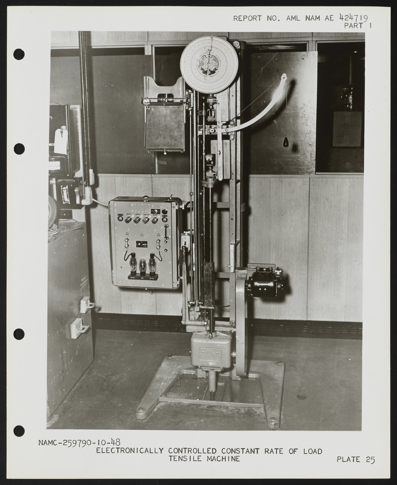

Performance Collections & Services
From alpine endurance running socks to graduated recovery over-the-calf profiles, our collections are engineered for maximum physiological efficiency.

Kinetic 200 Crew Sock
Our flagship mid-calf crew sock engineered with a dual-ribbed stay-up cuff, targeted plantar arch compression, and high-density terry cushioning under the metatarsals.
Graduated Venous Recovery OTC
Over-the-calf medical-grade compression profile (20-25 mmHg) designed to promote venous return during long-haul travel, post-marathon recovery, and extended standing.
Trail Ultra Ankle Sock
Low-profile athletic sock featuring an integrated Achilles blister tab, dirt-repelling micro-mesh ankle collar, and dual-density forefoot impact dampening zones.
Silver Ion Antimicrobial Integration
Permanent co-extrusion of pure elemental silver ions within the polyamide sheath prevents bacterial replication and eliminates foot odor across multi-day expeditions.
Biomechanical Laboratory Gait Analysis
In-studio plantar pressure plate mapping and 3D dynamic scanning to prescribe customized compression tensions and targeted arch padding thicknesses.

Bespoke Corporate & Team Knitting
Custom colorway formulation, jacquard monogramming, and bespoke compression profiles for professional athletic franchises and private sporting clubs.